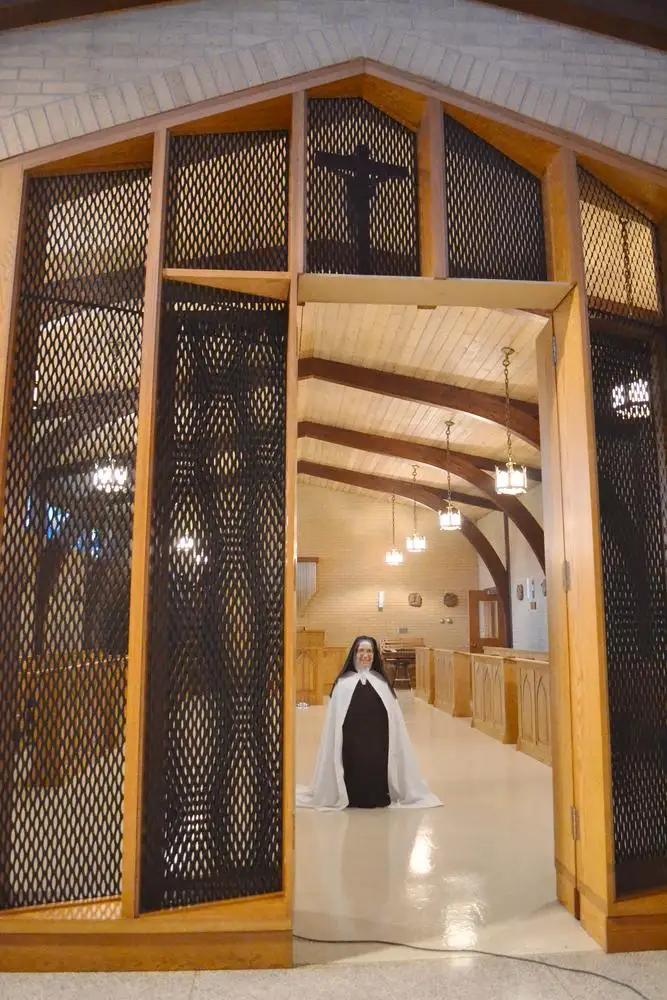

{kind=link}
Editor’s Note: This story is the first installment in a two-part glimpse inside the otherwise hidden life of the cloistered Carmelite monastery near Wahpeton, N.D. Today’s story introduces the monastery’s prioress, Mother Madonna. The second part, appearing Aug. 1, will explore the life of the monastery more broadly.
WAHPETON, N.D. — When Mother Madonna greets visitors at the Carmel of Mary Monastery, the room’s brightness surges.
“I’ve always described her as the sister with the big smile,” says Karen Weber, who, along with her husband, Hank, has been helping the sisters for nearly 18 years as caretakers. “She communicates directly, looks you right in the eye, and with that smile, says what she needs to share, and always with charity and clarity.”
It comes from an inner joy, Karen says, of living out her calling.
“The calling,” as it is known in religious life, is the summoning of a soul by the Lord, drawing one into a life of serving in an extraordinary way.
For Mother Madonna, the call came early.
“I fell in love with Jesus in the first grade, and by second grade, I knew I wanted to be his bride,” says the prioress, known then by her given name, Patricia Ann Morales.
Nearly immediately, the worldly obstacles came forth.
She recalls, at around age 8, leaving the confessional, where a priest had just told her after she broached the topic that he believed she was meant for religious life. “I was so excited, I got on my bike and rode home to tell my family,” she says.
But when she entered the house and announced her plans to someday marry Jesus, silence followed.
“My siblings walked away and my parents said, ‘We need to talk,’ ” she says. They discouraged her and told her to never talk about it again. “My heart was crushed.”
As a teenager, she tried wearing makeup and dating, but became disillusioned when her young suitors didn’t seem interested in what she enjoyed, like going to Mass. “They just didn’t hit the mark,” she says.
By her senior year in high school, her heart remained fixed on Jesus alone. Forlorn, her parents encouraged her to look into college.
Driving around one day, she stumbled upon a recruiting office for the military, and soon became interested in the Air Force, mainly because she could keep her hair long, she says.
The recruiter was ready to sign her up, but advised her to inform her parents first, even though, at 18, she wasn’t legally required to do so. So she bought a bundle of roses for her mother and went home to announce her plans.
At the news, her father threatened to disown her, she says. Nevertheless, a few months later she entered the U.S. Air Force. “Dad took my picture out of his wallet and didn’t talk to me for a long time, but eventually he came around,” she says. He even later suggested that she sign up for another tour.
The military had offered her many opportunities, including overseas service, and she received many accolades. But it wasn’t enough to change her glance toward God.
After learning about a small Carmelite monastery near a city called Wahpeton, she told her parents she was going to become a cloistered nun in rural North Dakota. Though their jaws dropped once again, this time, they could do nothing to thwart her plans.
“That love for our Lord had been growing since I was very young and I knew if I wanted to serve him totally I couldn’t do it as a teacher, as a nurse or even in a parish,” she explains. “In order to give myself fully, the cloister would be the only place I could do that.”
So in August 1988, at age 23, she left her home in San Antonio, Texas, to visit a small monastery here, and at the sight of it, she says, knew immediately she’d “come home.”
She entered on May 16, 1989, with never a glance back.
Sister Margaret Mary, prioress at the time, remembers the phone call at 6:15 a.m. that summer, and the eager, young voice announcing her interest in the monastery.
“We arranged for her to come for a visit, but we always tell (prospective nuns) to go home and think about it,” she explains. “If she has a sense of peace thinking about being a Carmelite, that’s the sign.”
When Patricia arrived a few months later, Sister Margaret Mary says, the “postulant,” as they are known initially, fit right in and immediately stepped up to the plate. “She’s done all kinds of things in the community. She was a sacristan, seamstress, cook, in charge of the canning, so is very well-rounded.”
This past November, when elections for a new prioress rolled around, Sister Madonna rose to the top of the list of eight sisters currently there, and was chosen to lead them into the next three years, the length of a term of the office.
“She’s a very organized person. She thinks ahead and plans things through, then gets them done,” Sister Margaret Mary says, adding with a smile, “The grass doesn’t grow under her feet.”
Upon becoming prioress, a “sister” becomes “mother,” and assumes communication with the outside world — generally, the sisters don’t talk except during a brief period of recreation time in the evening — and addresses any needs that arise in the community.
The Rev. Peter Anderl, who pastors two nearby parishes, hears the sisters’ confessions on a regular basis and offers spiritual direction to those who request it. “Humbly,” he says, “I probably know the sisters more than anyone else on earth, inside and out.”
{kind=link}

“Mother Madonna is joy incarnate,” he adds. “She’s very bubbly, always smiling, always joyful, always wanting to help and it’s very inspiring to see that. And that is a direct fruit of knowing Christ, of tasting Christ and living in his love.”
But what about those on the outside who also love her? Like her family, who can only visit her once a year, if that, and even then, in limited fashion, conversing with her from the visitor’s side of the enclosure in the “speak room?”
“They’ve come around, but it’s hardest for my mom,” says Mother Madonna. Her father has since passed away. “My siblings, now they’ve gone through marriages, raising children, and they’re like, ‘Oh, you’ve got the better life. You don’t have all the stress marks we have on our faces, all the gray hairs.’ They’re seeing it differently now.”
Though it is a life of sacrifice — the sisters in the cloister take vows of poverty, chastity and obedience, along with the practice of silence — the rewards are eternal, according to Mother, including getting to better know her spouse, the only one who can love in completeness.
“The day I see (Jesus), I’m just going to melt. I just want to fall into his arms,” she says. “I’m just waiting for that day, that moment … and I know it’s going to far surpass anything two humans can have together, because it’s going to be within.”
[For the sake of having a repository for my newspaper columns and articles, I reprint them here, with permission, a week after their run date. The above piece ran in The Forum newspaper on July 25, 2015.]